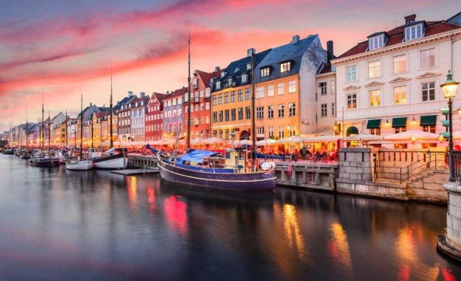
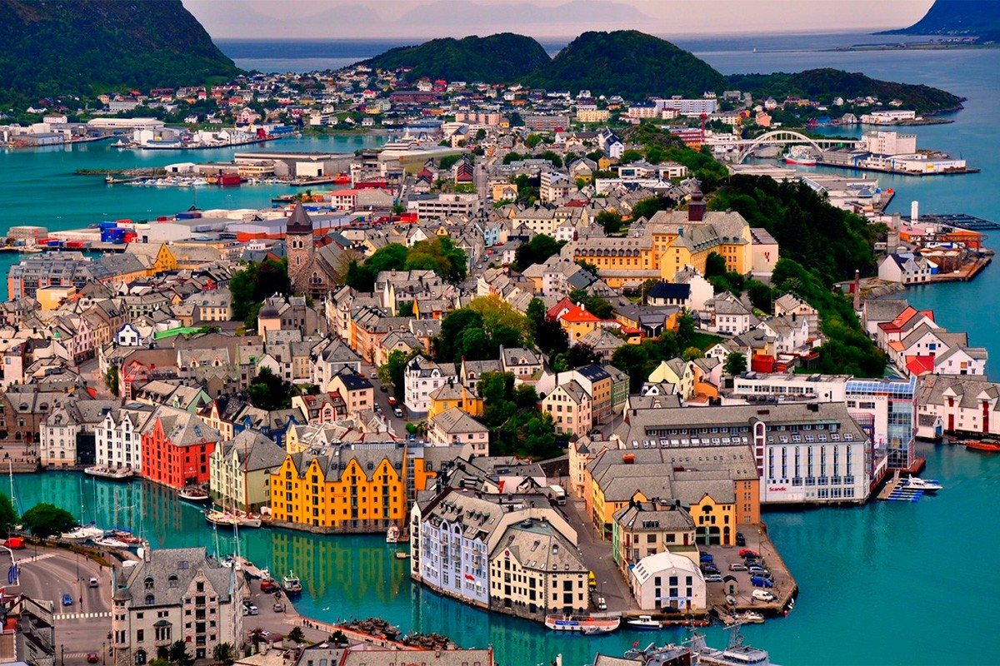

Народности
Датчане (дат. danskere) — народ и нация Северной Европы, основное население Дании. Живут также в США, Канаде, Германии, Швеции, Норвегии и других странах. Общая численность около 5,6 миллионов человек (2013). Ближе всего стоят к другим скандинавам (норвежцам и шведам). Язык — датский, входит в германскую группу. Преобладающая религия — лютеранство.

Факты
Дания - самая маленькая и самая южная из скандинавских стран, государство в Северной Европе на берегах Балтийского и Северного морей. Бóльшая часть территории Дании состоит из обширных волнистых равнин и невысоких, местами крутосклонных холмов. Отдых в Дании - это и отдых на море, и знакомство с богатой культурой и историей старейшего Скандинавского Королевства. Это замечательная возможность отдохнуть всей семьей. В Дании очень много внимания уделяют детям – здесь множество аквапарков, центров развлечений.
Климат
Климат Дании умеренно-морской с мягкой зимой, прохладным летом и затяжными переходными сезонами. Влияние океана наиболее резко выражено зимой. Средняя температура февраля 0° С, июля 15–16° С. Бóльшую часть года преобладают сильные ветры, преимущественно западных румбов. Зимой держится облачная погода, а весной – солнечная. Весна наступает поздно. Летом стоит ясная теплая погода. Среднее годовое количество осадков колеблется от 800 мм на западе Ютландии до 450 мм на побережье пролива Большой Бельт. Максимальное количество осадков приходится на осенне-зимний период, а минимальное – на весну и начало лета. Осадки в основном выпадают в виде дождя.
Ссылка на видео про Данию